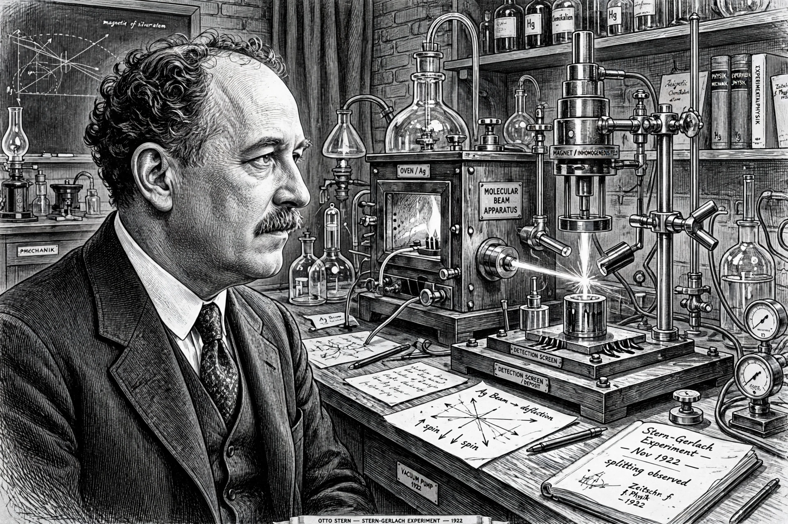

Otto Stern (1888–1969) was a German-American physicist who won the Nobel Prize for developing the molecular beam method and measuring the proton's magnetic moment.
With Walther Gerlach in 1922 he performed the Stern–Gerlach experiment in Frankfurt, demonstrating space quantisation — decisive early evidence for quantum theory and later understood as electron spin. His molecular-beam experiments measured atomic magnetic moments and verified Maxwell–Boltzmann velocity distributions.
Stern fled Nazi Germany in 1933 for Carnegie Institute of Technology in Pittsburgh, later retiring to Berkeley. He was nominated for the Nobel Prize a record number of times before winning for 1943.